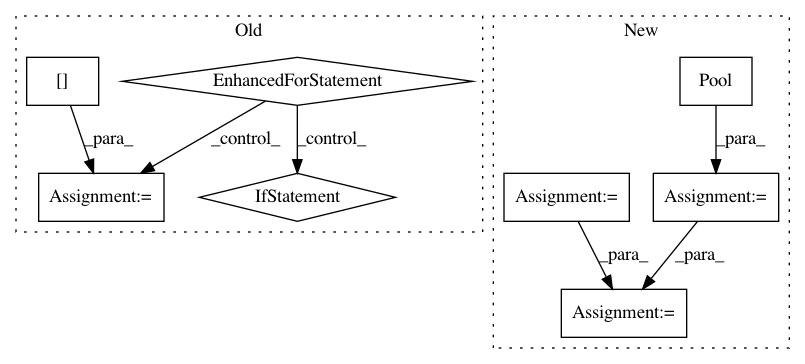

17e56b9100275068c7ad0e74c0bf247866da846f,torch_geometric/utils/geodesic.py,,geodesic_distance,#Any#Any#Any#Any#Any#Any#,10
Before Change
dest = None if dest is None else dest.detach().cpu().to(torch.int).numpy()
outs = []
for i in range(len(src)):
s = src[i:i + 1]
d = None if dest is None else dest[i:i + 1]
out = gdist.compute_gdist(pos, face, s, d, max_distance * norm) / norm
out = torch.from_numpy(out).to(dtype)
outs.append(out)
out = torch.cat(outs, dim=0)
if dest is None:
out = out.view(-1, pos.shape[0])
After Change
dest = None if dest is None else dest.detach().cpu().to(torch.int).numpy()
pool = mp.Pool(mp.cpu_count())
outs = pool.starmap(
_parallel_loop,
[(pos, face, src, dest, max_distance, norm, i, dtype) for i in range(len(src))]
)
pool.close()
out = torch.cat(outs, dim=0)
In pattern: SUPERPATTERN
Frequency: 3
Non-data size: 8
Instances
Project Name: rusty1s/pytorch_geometric
Commit Name: 17e56b9100275068c7ad0e74c0bf247866da846f
Time: 2020-05-31
Author: j-magnusson@t-online.de
File Name: torch_geometric/utils/geodesic.py
Class Name:
Method Name: geodesic_distance
Project Name: rusty1s/pytorch_geometric
Commit Name: cce4382f73d0976fb94b003949acd668377a0869
Time: 2020-04-03
Author: j-magnusson@t-online.de
File Name: torch_geometric/utils/geodesic.py
Class Name:
Method Name: geodesic_distance
Project Name: datascienceinc/Skater
Commit Name: 2e24c5e8eac125d5b42b21ebd7353b8ec75cc27d
Time: 2017-06-01
Author: aikramer2@gmail.com
File Name: skater/core/global_interpretation/feature_importance.py
Class Name: FeatureImportance
Method Name: feature_importance